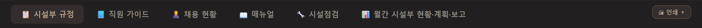
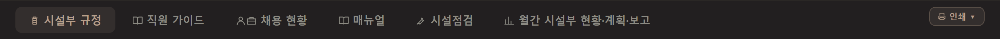
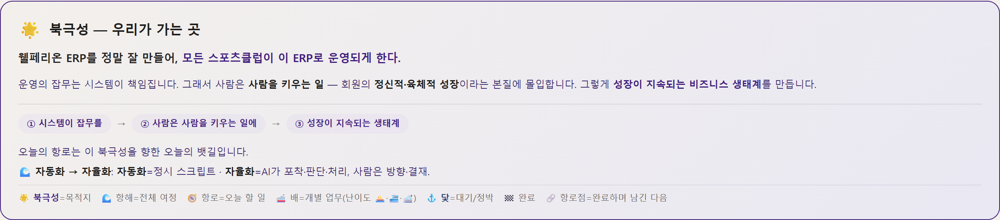
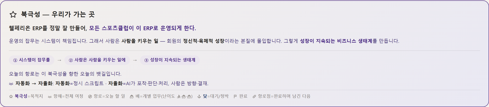
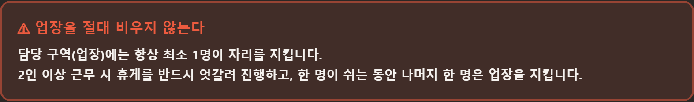

시험하는 것은 하나 — 화면 82장에 들어 있는 이모지 그림(문서·주의·배 모양 등)을 같은 뜻의 선 아이콘으로 바꾸는 것. 색·글자·배치는 그대로. 아래는 실제 화면 네 군데를 같은 자리에서 잘라 낸 것 — A 가 지금, B 가 바꾼 뒤. 이모지는 기기마다 다르게 그려지고 색·크기를 화면이 정할 수 없어서 규칙집이 「쓰지 않는다」고 하는 항목입니다. 항해 아이콘(별·물결·나침반·배·닻·깃발)도 함께 바뀝니다.




